통합 개편 맵T07 · 전체 데이터
네 기기 · 실제 앱 기존·개편 비교
기존은 10월 13일 실제 맵 원본입니다. 개편은 iPhone·iPad의 10월 31일 촬영과 Duo의 11월 2일 촬영입니다. iPhone·접힘은 HRV, iPad·펼침은 수면을 비교합니다. iPad 전후는 같은 기기 계열의 서로 다른 모델·해상도입니다.
기존 이미지의 정확한 소스와 Duo 각도는 미확인입니다. 새 Duo는 접힘 0°의 LCD, 펼침 180°의 LCD-1과 실제 PNG를 확인했습니다. 수면의 불러오기 표시는 촬영 당시 상태를 그대로 보존했습니다.
일반 iPhone · HRV
일반 iPhone · HRV · 기존 · 10월 13일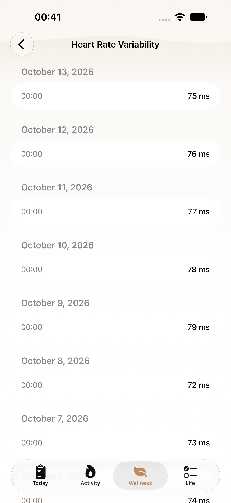
이미지별 소스 미확인 · 공통 dirty 443a32ca · 2026-10-13T00:41:08.871000+09:00
1320×2868 · SHA256 293c02c8f5267518af67dd85c68fdabae051b5209ab8bb64c1a4553812607640
historical-capture-index timestamp; original attachment not independently relinked일반 iPhone · HRV · 개편 · 10월 31일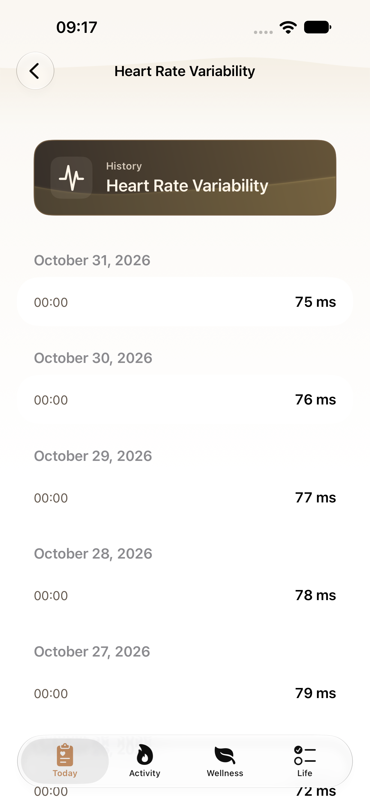
ed844d14 · 2026-10-31T09:17:45.668000+09:00
1320×2868 · SHA256 af4be8d12bd0b5443a78a62f72deae9a2d5fc3d8517ed973faded1723e5c1e24
native-XCTest-attachment iPad · 수면
iPad · 수면 · 기존 · 10월 13일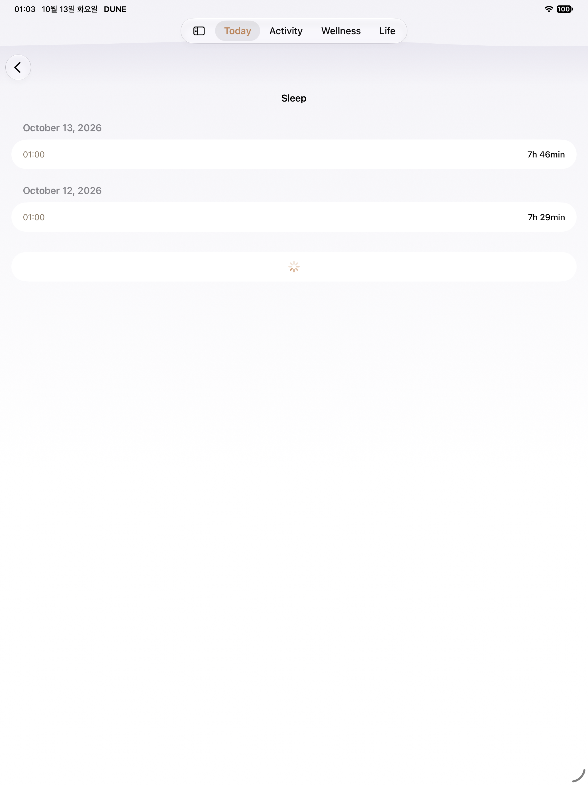
이미지별 소스 미확인 · 공통 dirty 443a32ca · 2026-10-13T01:03:32.867000+09:00
2064×2752 · SHA256 46866da8b486a826f46ffd9628fdda6e7b3b637ca47dd21b73c672c75d11ce2c
historical-capture-index timestamp; original attachment not independently relinkediPad · 수면 · 개편 · 10월 31일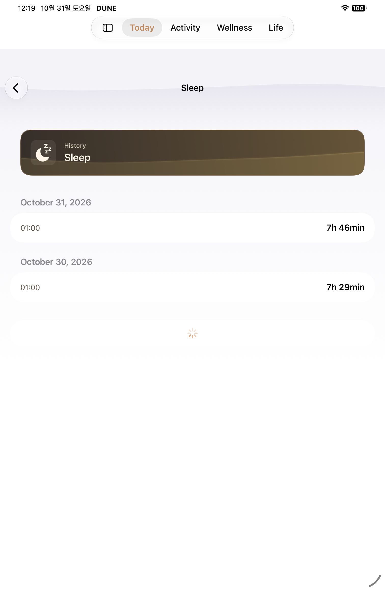
ed844d14 · 2026-10-31T12:19:18.444000+09:00
1512×2316 · SHA256 8403057ad3ab337e789a5a347ea195e8c0d3b19a61c032c3fb1aa07aa0131442
native-XCTest-attachment Duo 접힘 · HRV
Duo 접힘 · HRV · 기존 · 10월 13일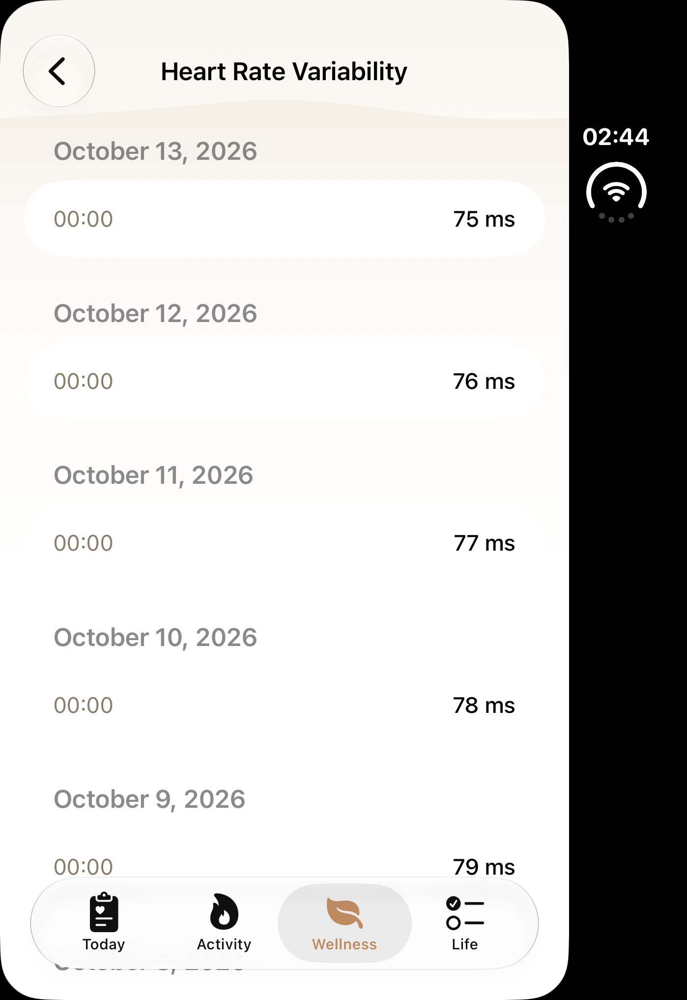
이미지별 소스 미확인 · 공통 dirty 443a32ca · 2026-10-13T02:44:30.980000+09:00
1398×2034 · SHA256 aa4fe614a5ad5689f060375476272f13333b089225bdc7532a97b75d29a70394
historical-capture-index timestamp; original attachment not independently relinkedDuo 접힘 · HRV · 개편 · 11월 2일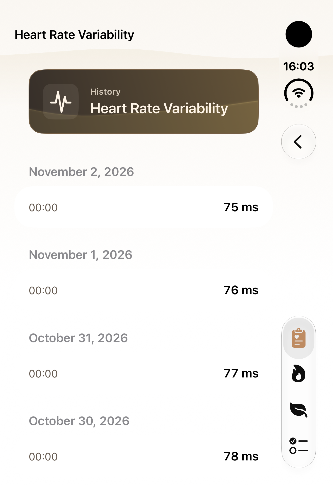
e2759822 · 2026-11-02T16:03:23.906539+09:00
1398×2034 · SHA256 8a7b8f1a92c76d111bdd8b52517a916dd930e0086aa2d6de0b32a199872ceab4
host-file-mtime of paired native PNG; not XCTest attachment timestamp 새 촬영: 0° → 0° · LCD 활성 · 유효 ACK 4회. 각도 원문 · ACK 원문 · 검사 결과
Duo 펼침 · 수면
Duo 펼침 · 수면 · 기존 · 10월 13일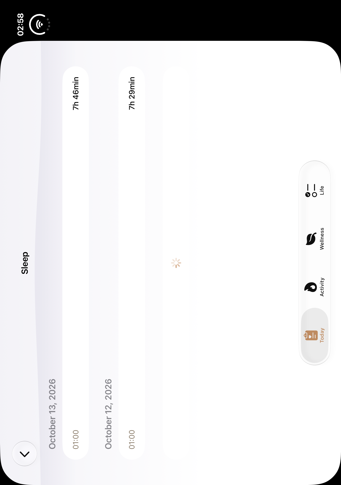
이미지별 소스 미확인 · 공통 dirty 443a32ca · 2026-10-13T02:58:56.679000+09:00
2006×2852 · SHA256 718f8d4f5d0a5cfb1d926d4bdf3b4e967f4e541fc32d207212ec71f1884b6837
historical-capture-index timestamp; original attachment not independently relinkedDuo 펼침 · 수면 · 개편 · 11월 2일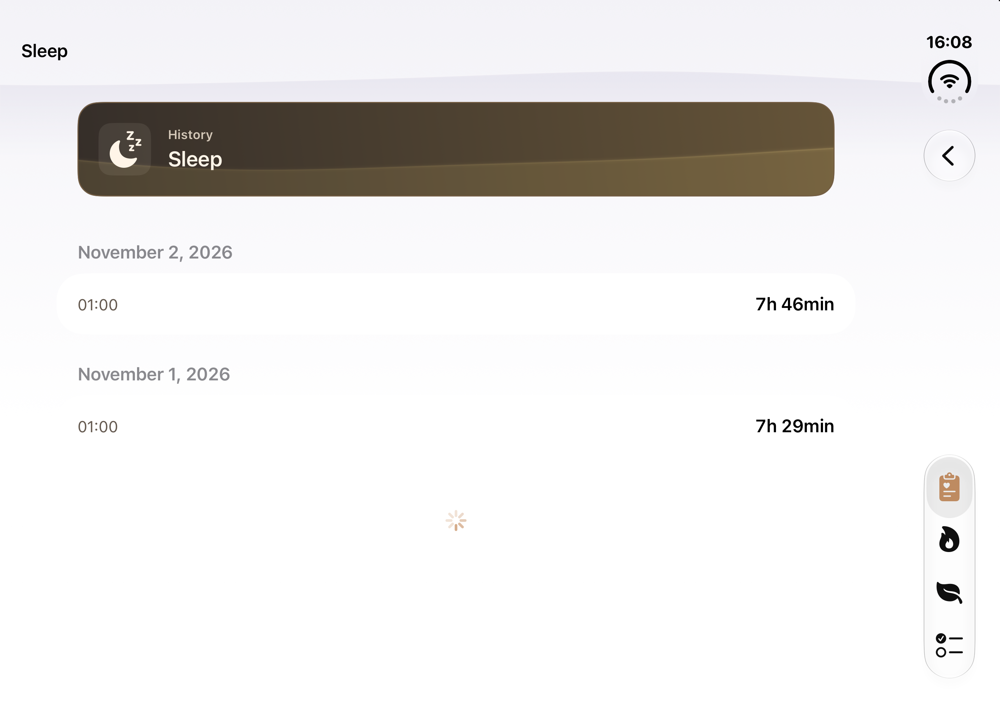
e2759822 · 2026-11-02T16:08:28.060508+09:00
2853×2007 · SHA256 3eabaad560074e334f2739f8e8b269cc0529e4c2c473182d98c40e3caa8594df
host-file-mtime of paired native PNG; not XCTest attachment timestamp 새 촬영: 180° → 180° · LCD-1 활성 · 유효 ACK 3회. 각도 원문 · ACK 원문 · 검사 결과
Duo 접힘 · 제한 이력의 기록 있음·없음 상태
Duo 접힘 · 제한 이력에 기록 있음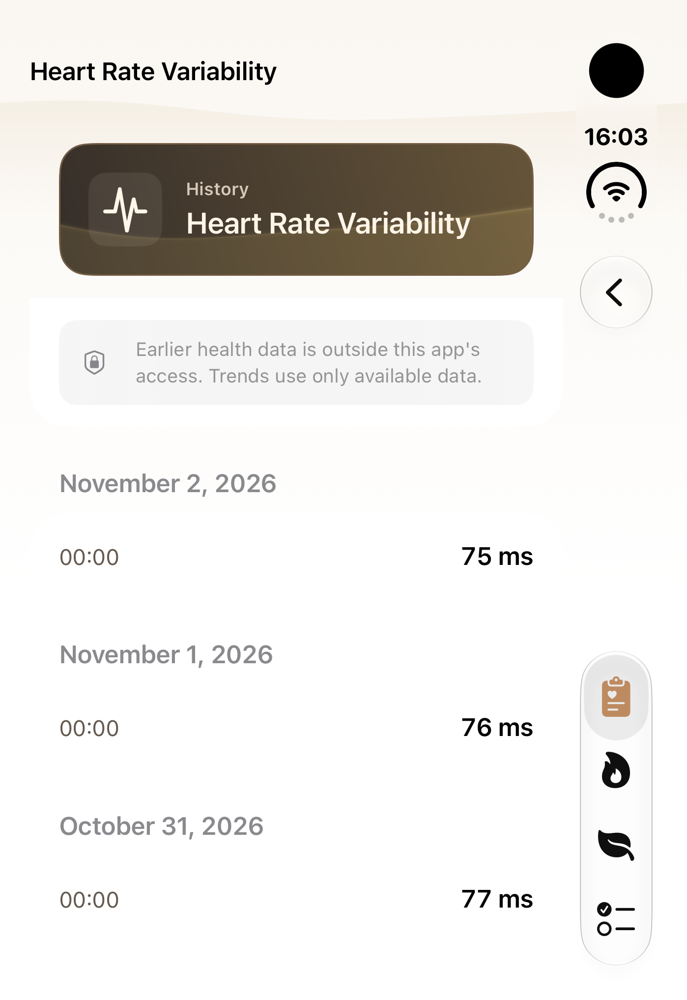
실제 소스 e2759822 · 활성 LCD · 원본 SHA256 707865012a4ebf36a04b6321ac2c6b918d6eae167d2e4c28f6fe1c3b044525ccDuo 접힘 · 제한 이력에 기록 없음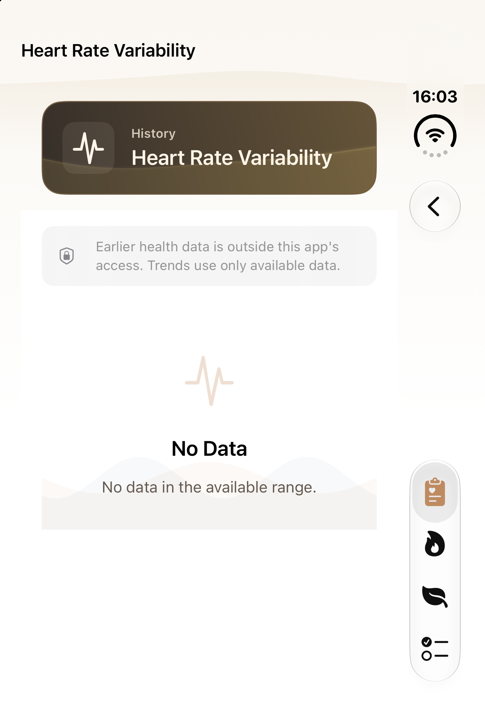
실제 소스 e2759822 · 활성 LCD · 원본 SHA256 5f078e3ca437a65f01ab2d065444ef200776b79b4d581126659f08893d1686e9 원본 출처·시각 종류·검증 범위 · 통합 실제 화면 비교
16개 분류 · iPhone 기존·개편 실제 화면
아래 이미지는 2026년 10월 31일에 실제 앱에서 촬영했습니다. 11월 2일은 비교 자료를 정리한 날짜입니다. 각 이미지의 원본 파일과 해시를 보존했습니다.
범위와 읽는 방법기존 소스는 2dfe6e60, 개편 소스는 ed844d14입니다. 같은 iPhone의 밝은 기본 글씨 초기 화면을 비교합니다. 각 실행에서 한 개 검사 메서드가 16개 분류를 순회해 통과했으며, 16개 독립 검사나 네 기기 전체 검증이라는 뜻이 아닙니다.
개편 헤더에 분류별 원래 시스템 아이콘과 제목을 추가하고 시간·값의 행 표현을 강조했습니다. 날짜와 첫 행의 실제 단위를 함께 확인할 수 있습니다. 수면의 01:00은 첫 수면 단계 시각입니다. 운동 기록은 촬영 당시 시각을 쓰므로 두 실행의 시간이 다릅니다. 기존 이미지의 불러오기 표시는 원본 그대로 남겼습니다.
이 구역은 10월 31일 iPhone 자료입니다. 위의 네 기기 비교에서 11월 2일 Duo 촬영을 따로 확인할 수 있습니다. 이 페이지는 PR 최종 완료나 CI 통과를 뜻하지 않습니다.
심박변이도
첫 행 표시: 75 ms
심박변이도 · 기존 iPhone · 10월 31일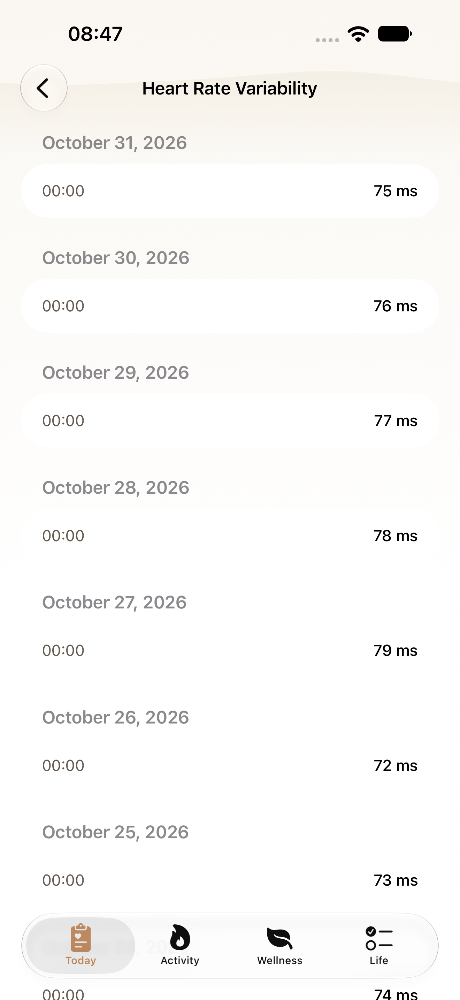
실제 소스 2dfe6e60 · 2026-10-31T08:47:03.457000+09:00
원본 2633DF24-93C7-4C48-B432-A478BC7E167D.png
SHA256 4ee4b8ca342c4145dc78de13272a49e0cbfe8bbf408b16ef45e787570db7423f
심박변이도 · 개편 iPhone · 10월 31일실제 소스 ed844d14 · 2026-10-31T09:17:45.668000+09:00
원본 8111ECA7-BBC9-470A-AFBE-17A1F06FC6B7.png
SHA256 af4be8d12bd0b5443a78a62f72deae9a2d5fc3d8517ed973faded1723e5c1e24
안정시 심박
첫 행 표시: 50 bpm
안정시 심박 · 기존 iPhone · 10월 31일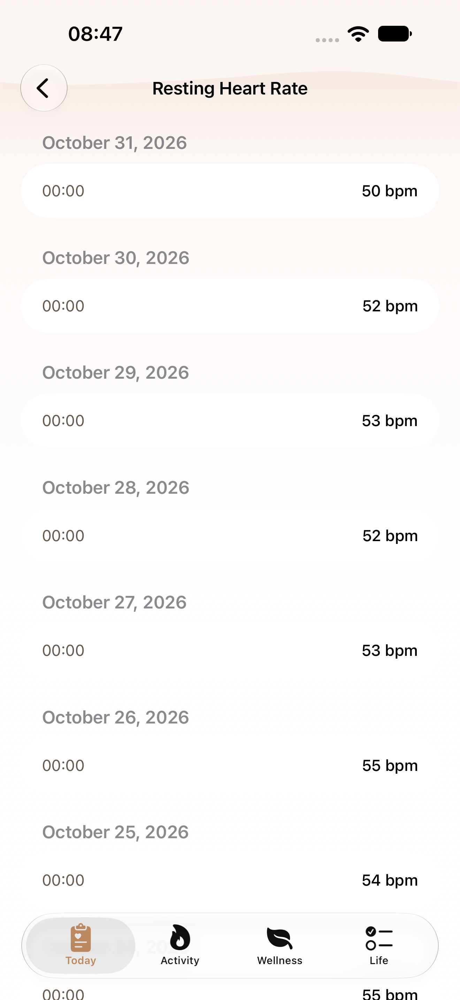
실제 소스 2dfe6e60 · 2026-10-31T08:47:15.089000+09:00
원본 A4CD90BE-E569-4F65-A13E-D4EFC15EB250.png
SHA256 97e08c26fe394276a611ebc0da1196cf2d608cbf5d229ebb983b4b2fc5bf61bc
안정시 심박 · 개편 iPhone · 10월 31일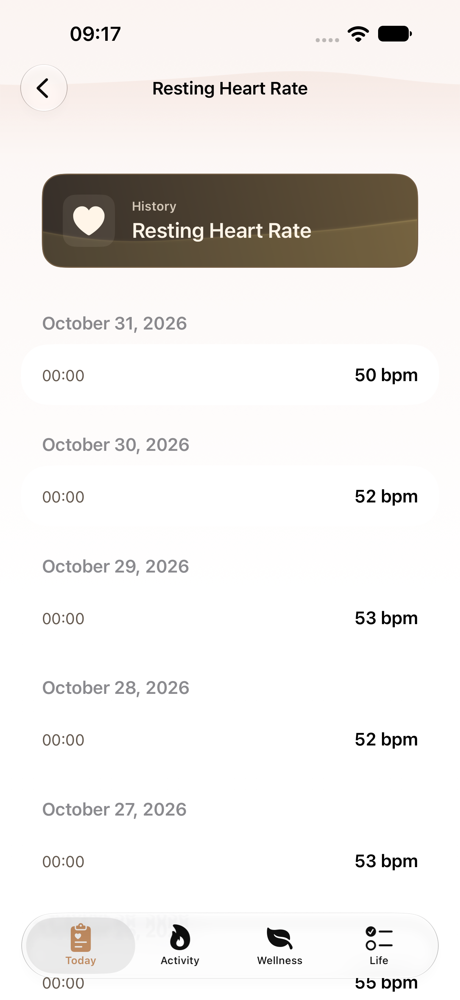
실제 소스 ed844d14 · 2026-10-31T09:17:57.448000+09:00
원본 1A7DC2D8-1803-4F9B-8B84-206324A185C1.png
SHA256 208718744bb09ebd8f1143f22861acc14e90fa099807cdb2c57d774f50b3d242
심박수
첫 행 표시: 67 bpm
심박수 · 기존 iPhone · 10월 31일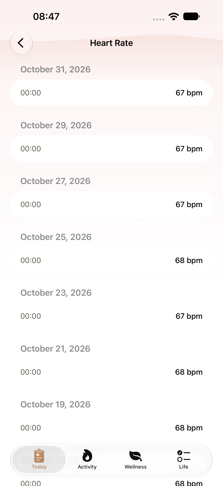
실제 소스 2dfe6e60 · 2026-10-31T08:47:26.688000+09:00
원본 7AE20757-E4C0-42E9-8544-B51071591D50.png
SHA256 8d818ddab608942034f4d8c228a02ce46e7a85a7c24e6a2d4db8de8bad92beea
심박수 · 개편 iPhone · 10월 31일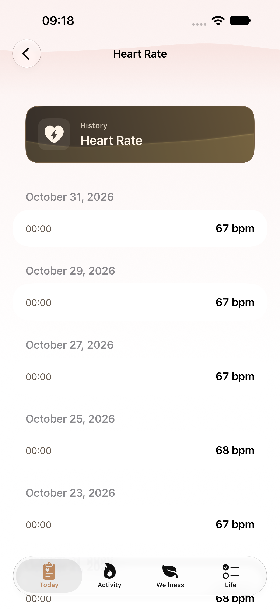
실제 소스 ed844d14 · 2026-10-31T09:18:10.058000+09:00
원본 8B79D715-5A8D-4672-BF59-611122AB5C54.png
SHA256 1537306151d6c88f759278086079feead780809fe0c3a331d173a5425579d3ec
수면
첫 행 표시: 7h 46min
수면 · 기존 iPhone · 10월 31일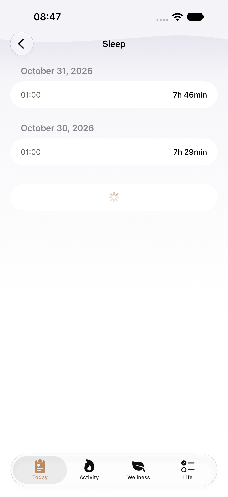
실제 소스 2dfe6e60 · 2026-10-31T08:47:47.759000+09:00
원본 BF5E51C7-2582-4F96-842F-94B133C0D7C7.png
SHA256 4e1cf2f0e9f5686528e0d74d686da517ccd0873ba73fea24ad8f565f7ecbc1aa
수면 · 개편 iPhone · 10월 31일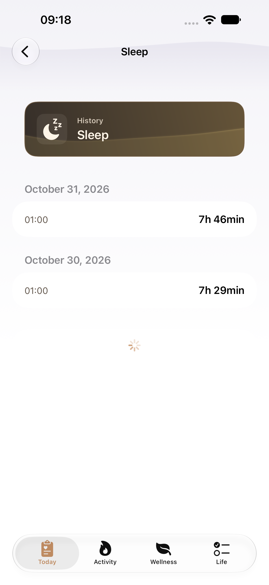
실제 소스 ed844d14 · 2026-10-31T09:18:21.310000+09:00
원본 8521A8F3-141B-4980-92AC-A51D371BCD00.png
SHA256 3c6eb0cd4253609e7fe5bfaed60af498f62961f8e3ffd939a2ec8c073e384bb1
운동 시간
첫 행 표시: 48 min
운동 시간 · 기존 iPhone · 10월 31일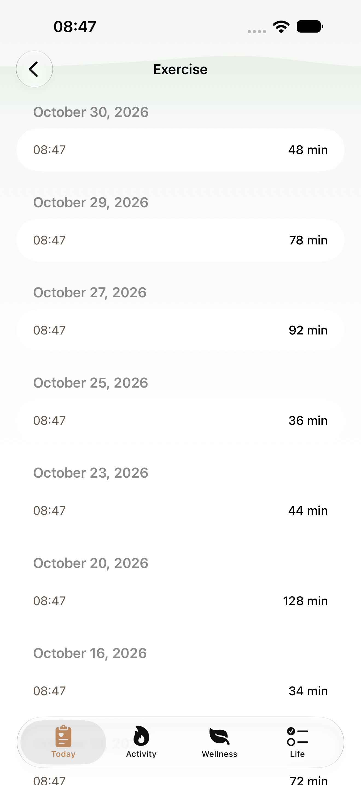
실제 소스 2dfe6e60 · 2026-10-31T08:47:59.487000+09:00
원본 9E42C9A9-7AD3-4B4D-AF48-A6BFEB26850F.png
SHA256 f44fed8d61359f4179fabfd7f3cc20716ccdf75e27e546bb3f4f5e7081ccf38d
운동 시간 · 개편 iPhone · 10월 31일실제 소스 ed844d14 · 2026-10-31T09:18:42.898000+09:00
원본 11AF52A3-E2F7-474D-AB05-865860C85CCB.png
SHA256 3a890985d77e82b7fc9bb38f5756a144afee4256b234821c777c2df05e47a63d
걸음 수
첫 행 표시: 8,200
걸음 수 · 기존 iPhone · 10월 31일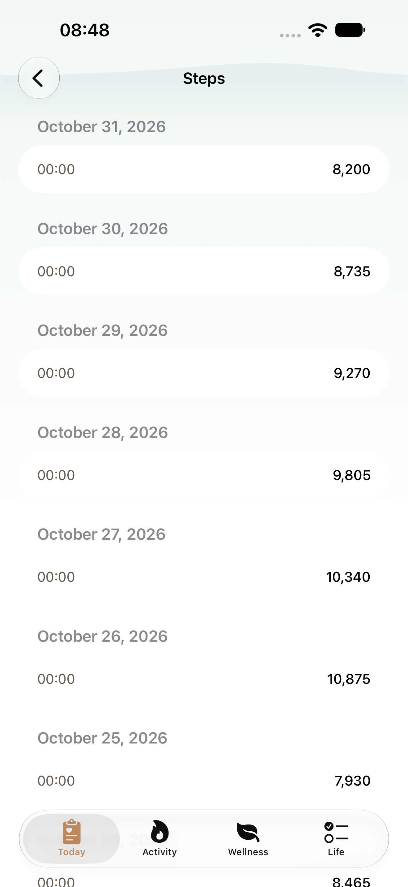
실제 소스 2dfe6e60 · 2026-10-31T08:48:21.280000+09:00
원본 84D1FE7F-92AD-4CC3-B7F6-63F1E07DF083.png
SHA256 5948ec2f370da0530dde519ba3cc8fa16708b10b67c0a34dd9d40319ae5fc884
걸음 수 · 개편 iPhone · 10월 31일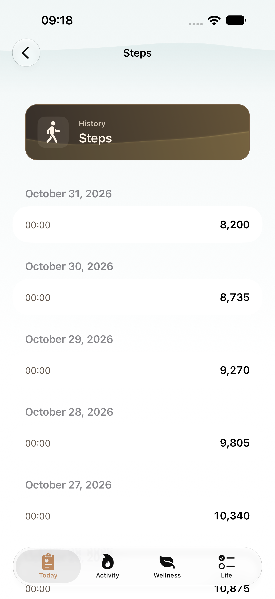
실제 소스 ed844d14 · 2026-10-31T09:18:54.544000+09:00
원본 FA6F058D-8901-4D14-A49D-40A3FC6C08A5.png
SHA256 8f631cbf53d0f6e26f820f2b4dc154a45d96efcf05360df173cddf90024dff38
체중
첫 행 표시: 78.3 kg
체중 · 기존 iPhone · 10월 31일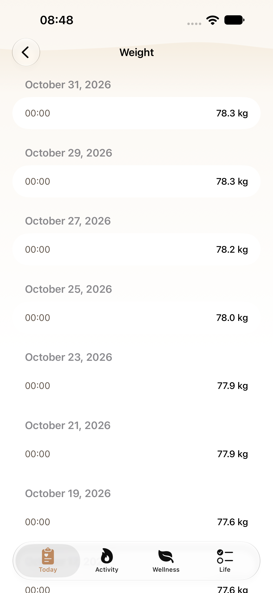
실제 소스 2dfe6e60 · 2026-10-31T08:48:42.897000+09:00
원본 0B308B1C-6499-4CB3-B030-6D05423A2920.png
SHA256 52fdf68e55bf948b3d8b5c61cf1c32fbfe5a590b98353b13d3efe987614165b9
체중 · 개편 iPhone · 10월 31일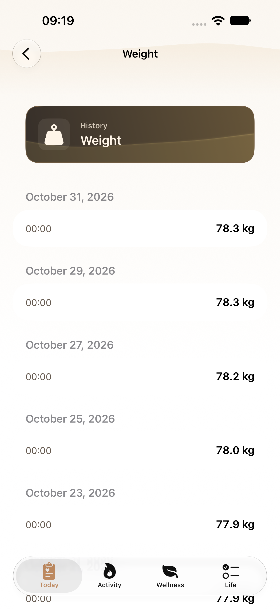
실제 소스 ed844d14 · 2026-10-31T09:19:16.022000+09:00
원본 4C6BE9E3-C97E-4E5A-9F59-3FB0FCDEB0A1.png
SHA256 e799583126cb4f602a69c144824f3267d087e2134d0803d8ddc3106437f58afe
BMI
첫 행 표시: 24.7
BMI · 기존 iPhone · 10월 31일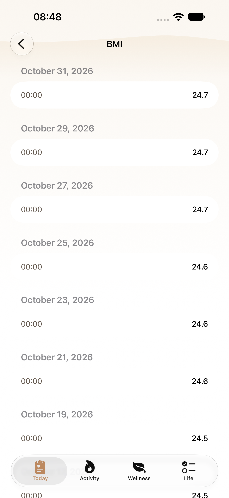
실제 소스 2dfe6e60 · 2026-10-31T08:48:54.507000+09:00
원본 D8CE82EB-926B-48A4-AA09-FEB884D51FB9.png
SHA256 ae21b93a1241f9f8f594d8035ab3e4ea3705b935056a784cdd1688b4992274b1
BMI · 개편 iPhone · 10월 31일실제 소스 ed844d14 · 2026-10-31T09:19:26.767000+09:00
원본 6F3D616D-F066-4271-B1ED-B2A8FE715CC9.png
SHA256 42f16656b4b8be478c6b3807003b200521b43aa89d91fab2801ff776f8656ab0
체지방률
첫 행 표시: 17.8%
체지방률 · 기존 iPhone · 10월 31일실제 소스 2dfe6e60 · 2026-10-31T08:49:06.185000+09:00
원본 7B14F596-1240-47F0-9B4A-490AE3DF0E50.png
SHA256 849d4fca5ffae950a76d3903e28a8e4488750c73e60cf736a96d2fb7641bdd14
체지방률 · 개편 iPhone · 10월 31일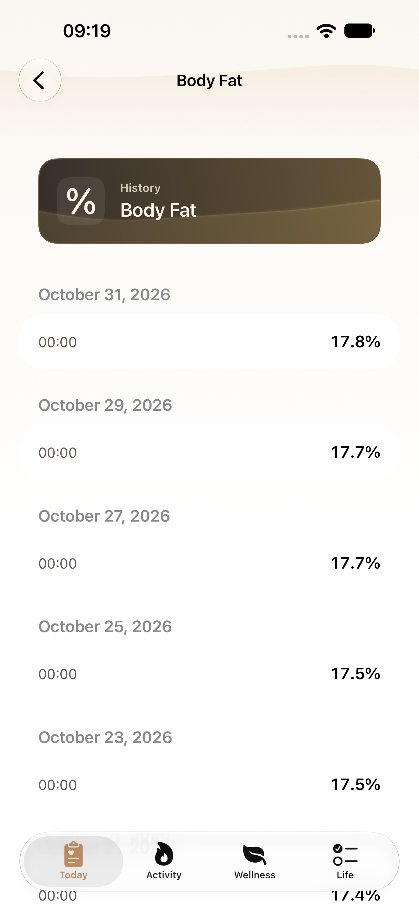
실제 소스 ed844d14 · 2026-10-31T09:19:37.597000+09:00
원본 F39093BF-1853-4CFF-A121-7A3DE30DBB66.png
SHA256 685d0c0699455c924beded5945416c4c4ead46955d801af3b79a4ad877d8076c
제지방량
첫 행 표시: 63.1 kg
제지방량 · 기존 iPhone · 10월 31일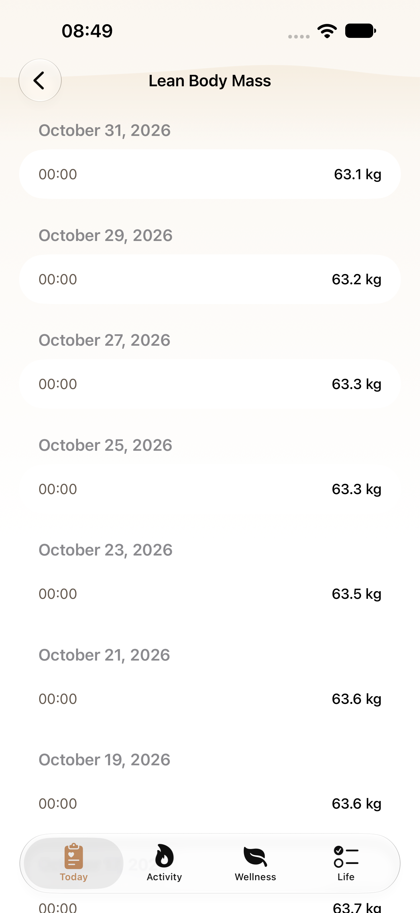
실제 소스 2dfe6e60 · 2026-10-31T08:49:17.807000+09:00
원본 E06A4452-4EA1-4489-956B-29F2D8BBFDA4.png
SHA256 b2ea8c0d0c2f9271b5d79a7c253c706440f56653e08349581871459d2ff48bc1
제지방량 · 개편 iPhone · 10월 31일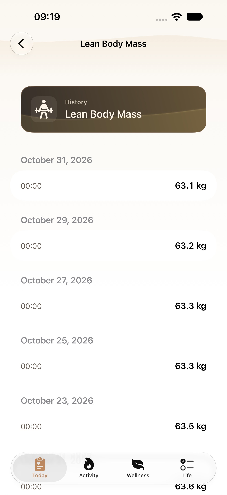
실제 소스 ed844d14 · 2026-10-31T09:19:49.027000+09:00
원본 1F195FAB-72F2-4628-863E-952A5E3758FC.png
SHA256 75494d0555b73d8471e97b77f584f65f6c928871dacecfafcfef27d21b4ee57e
혈중 산소
첫 행 표시: 98%
혈중 산소 · 기존 iPhone · 10월 31일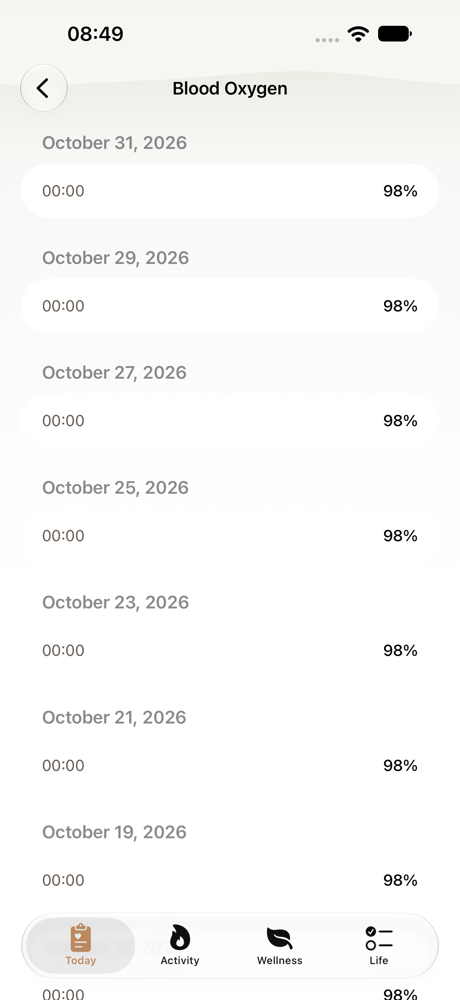
실제 소스 2dfe6e60 · 2026-10-31T08:49:39.492000+09:00
원본 E7A853CA-E558-4D6E-8BEF-3B0AE36543AD.png
SHA256 ca153b19263cb99659a0bef57ac0492bbb4aed18d2735b62d7c0ae113efb4ab0
혈중 산소 · 개편 iPhone · 10월 31일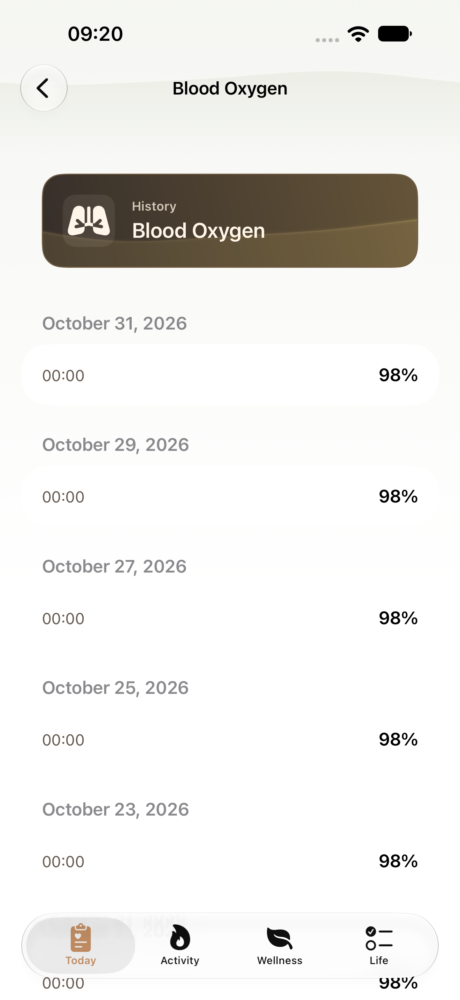
실제 소스 ed844d14 · 2026-10-31T09:20:00.842000+09:00
원본 FD4F1B93-A5E9-4D32-9203-3917120DE3B8.png
SHA256 678374a75a08f6f4a6394e20f22f3b26c8b601d76a0b02848c625b505afd0661
호흡수
첫 행 표시: 14 breaths/min
호흡수 · 기존 iPhone · 10월 31일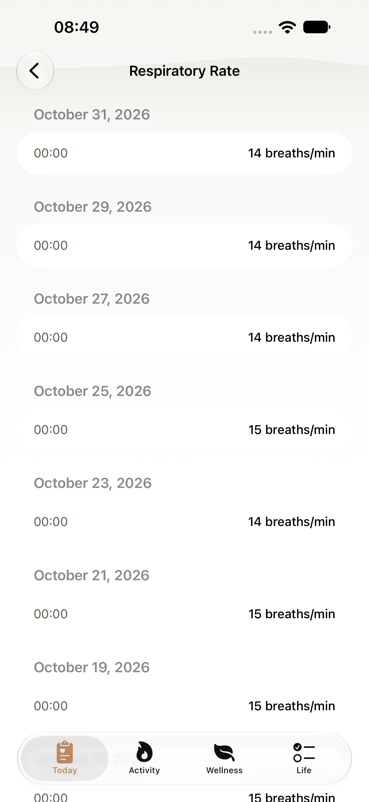
실제 소스 2dfe6e60 · 2026-10-31T08:49:59.072000+09:00
원본 DF0EF3BB-BA7D-4051-A549-A36A9F8A4392.png
SHA256 4f0a15dbb11b7ef4c846db235ad6acda50640d888cc741d4ff4c53815f669cbb
호흡수 · 개편 iPhone · 10월 31일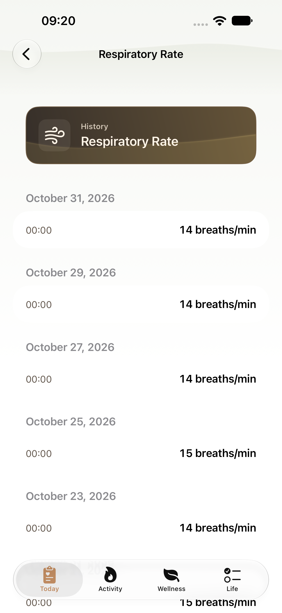
실제 소스 ed844d14 · 2026-10-31T09:20:12.546000+09:00
원본 1173F0F1-AC06-4848-B431-ED1E59AE9D08.png
SHA256 ea66a23a1cd3afe386a3a6d414dee1cc99bc68370a4c245f36464c8933bfde56
VO₂ Max
첫 행 표시: 48.4 ml/kg/min
VO₂ Max · 기존 iPhone · 10월 31일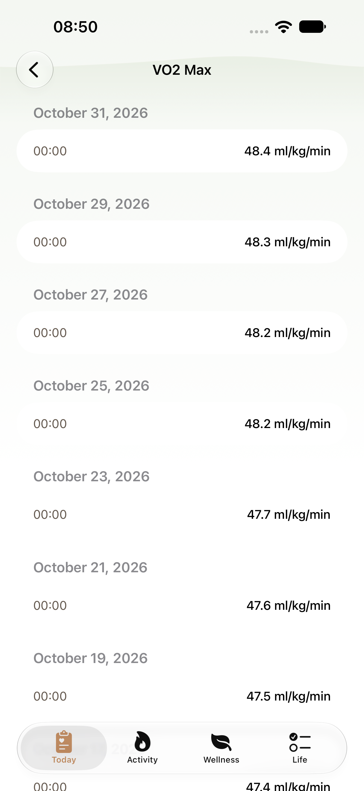
실제 소스 2dfe6e60 · 2026-10-31T08:50:11.334000+09:00
원본 4E310C1B-0C9E-4888-9BAF-CA7B25C3B7C9.png
SHA256 87ebc98cd43ae682f055c890ec49dac63e9ac924adebacc6dcf66887f7ca4a93
VO₂ Max · 개편 iPhone · 10월 31일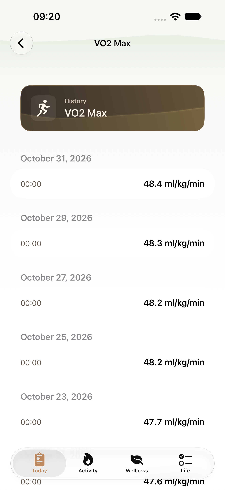
실제 소스 ed844d14 · 2026-10-31T09:20:24.506000+09:00
원본 205C55F1-BD91-4C1B-BB8D-AB376CD2314E.png
SHA256 71a7064fde25570211a57d073de8f0000bf1ef46959a46a59ab429ad942abe4f
심박 회복
첫 행 표시: 31 bpm
심박 회복 · 기존 iPhone · 10월 31일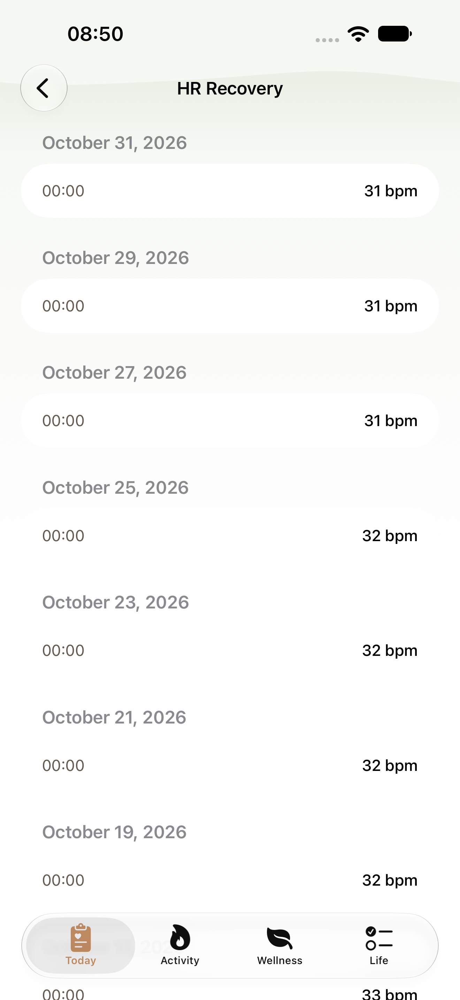
실제 소스 2dfe6e60 · 2026-10-31T08:50:33.637000+09:00
원본 292ADBA6-6307-4A74-9180-53272125BF23.png
SHA256 7df3b032f937e90b63c26f8498a401f8d724eec9538c7c210589ee72605f2c54
심박 회복 · 개편 iPhone · 10월 31일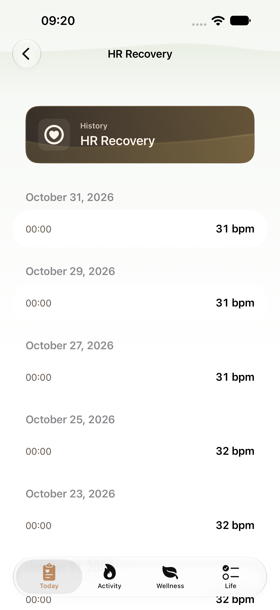
실제 소스 ed844d14 · 2026-10-31T09:20:37.058000+09:00
원본 8F4A213C-C8C2-4058-BFDD-83265B0E39B5.png
SHA256 c22b3c3ec5792cf4c43ae5032ae14c4d2434582fd36619c9d4a34d11b816095e
손목 온도
첫 행 표시: +36.5 °C
손목 온도 · 기존 iPhone · 10월 31일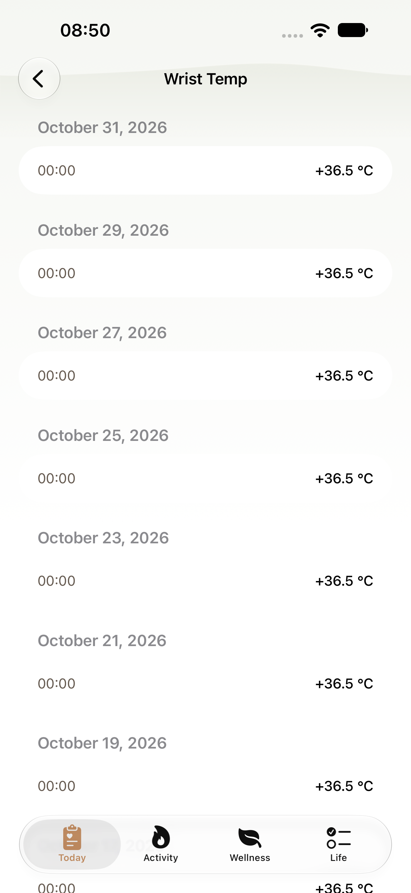
실제 소스 2dfe6e60 · 2026-10-31T08:50:45.442000+09:00
원본 CA90DE64-92E3-4B6D-80D6-E2F9CD4A1801.png
SHA256 7f117d0e72ce6c719a4d98235ece010e980b7772bfc7e9350c5c2cd4de3dd432
손목 온도 · 개편 iPhone · 10월 31일실제 소스 ed844d14 · 2026-10-31T09:20:48.604000+09:00
원본 D033604D-E6BB-4556-AFCC-7BADEFE1559A.png
SHA256 842efea74a0b642b87688941be170dc6fb0a60b2beb90b320d924ce48fa52641
호흡 장애
첫 행 표시: 1.2/hr
호흡 장애 · 기존 iPhone · 10월 31일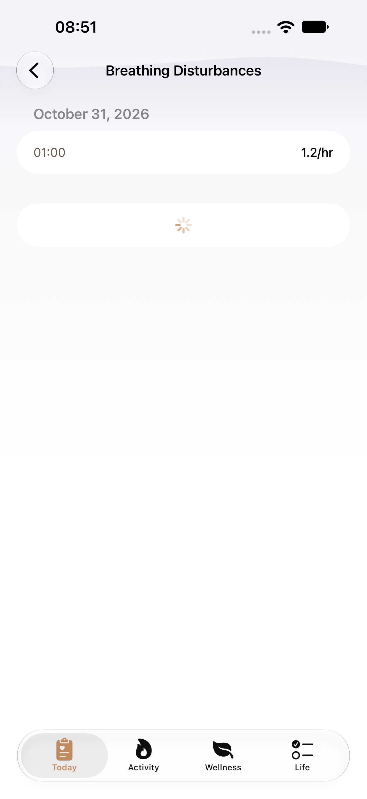
실제 소스 2dfe6e60 · 2026-10-31T08:51:06.506000+09:00
원본 5A23EFFA-8EBB-44FE-9364-DA2FDB8176AD.png
SHA256 5250af95591a5c254da51530e449f6f5eda900683174fef2a36a0027d4996614
호흡 장애 · 개편 iPhone · 10월 31일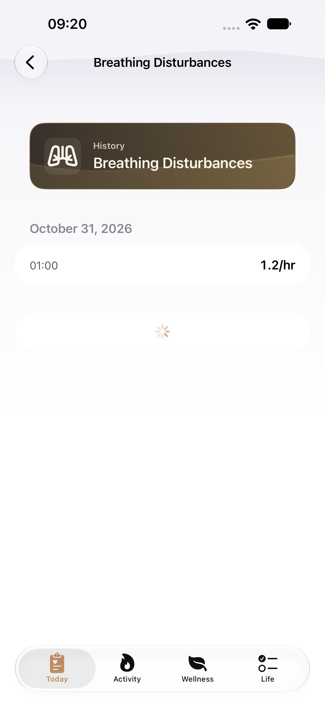
실제 소스 ed844d14 · 2026-10-31T09:20:59.878000+09:00
원본 4ED82DEA-3354-4B65-A9A0-ED065AA67DBB.png
SHA256 87e6f18548dc554a1b2f123fc0e1395704fde24d53cc51bc0b0b67fabc0cf685
기존 실제 맵 · 네 기기 원본 보존
다음은 10월 13일 기존 실제 맵의 진짜 T07 원본입니다. iPhone·Duo 접힘은 HRV 75 ms이며, iPad·Duo 펼침은 수면 7h 46min과 불러오기 표시가 있습니다. 분류가 다른 이미지를 같은 상세 화면인 것처럼 바꾸지 않았습니다.
공통 메타데이터는 443a32ca 및 dirty 상태입니다. 각 이미지의 정확한 소스 변경과 접힘 각도 readback은 새로 확인되지 않았으므로, 역사적 참고 자료로만 사용합니다. Duo 펼침 원본에는 EXIF 방향 6이 저장되어 있습니다. 브라우저에서 이 방향 정보를 따라 읽기 좋게 표시하며 원본 PNG 바이트는 그대로 유지합니다. 이 방향 정보가 실제 접힘 각도를 증명하지는 않습니다.
regular · 기존 hrv · 10월 13일실제 소스 이미지별 정확한 소스 미확인 · 2026-10-13T00:41:08.871000+09:00
원본 T07.png
SHA256 293c02c8f5267518af67dd85c68fdabae051b5209ab8bb64c1a4553812607640
ipad · 기존 sleep · 10월 13일실제 소스 이미지별 정확한 소스 미확인 · 2026-10-13T01:03:32.867000+09:00
원본 T07.png
SHA256 46866da8b486a826f46ffd9628fdda6e7b3b637ca47dd21b73c672c75d11ce2c
duo · 기존 hrv · 10월 13일실제 소스 이미지별 정확한 소스 미확인 · 2026-10-13T02:44:30.980000+09:00
원본 T07.png
SHA256 aa4fe614a5ad5689f060375476272f13333b089225bdc7532a97b75d29a70394
duo-open · 기존 sleep · 10월 13일실제 소스 이미지별 정확한 소스 미확인 · 2026-10-13T02:58:56.679000+09:00
원본 T07.png
SHA256 718f8d4f5d0a5cfb1d926d4bdf3b4e967f4e541fc32d207212ec71f1884b6837
출처와 남은 범위
16개 초기 화면의 제목·아이콘·시간·값·단위·행 배치를 실제 PNG로 확인했습니다. 초기 화면 비교만으로 모든 하단 항목·상태·기간 이동·뒤로 가기나 의료적 정확성을 증명하지 않습니다. 이미지마다 실제 촬영 시각·단위·원본을 유지합니다.
기존 네 기기 원본과 개편 이미지의 파일·메타데이터는 evidence.json에 있습니다. 공식 실제 맵은 네 기기의 T07 PNG·행만 갱신했으며 다른 화면의 원본과 기록은 유지했습니다.